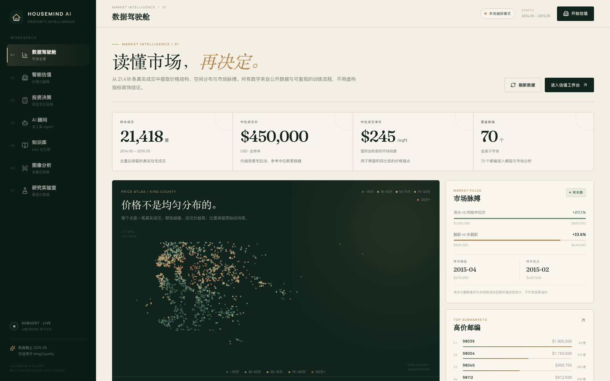
房产决策的困难不在于缺少一个数字，而在于这个数字是否可信、为什么、会错多少、如果出租是否养得起、 以及模型在什么情况下不该被相信。HouseMind AI 用七个模块回答这些问题。
系统如何从 21,613 条原始成交走到可用的估值；为什么选择 XGBoost；区间如何校准； TreeSHAP 如何保证加性；RAG 为什么能拒答；Agent 在没有大模型密钥时如何仍然真实工作； 视觉能力为何主动设限；以及这套系统在工程与安全上做了什么。
所有指标由仓库脚本生成，可在 ml/artifacts/ 复核。本文档不把 UCI、California 与 King County 的绝对误差放在同一张表里比较，也不声称模型能预测当前市场。
价格不可质疑。多数 AVM 只给一个数字，用户无法判断它凭什么、误差多大。
投资与估值脱节。知道房价，不等于知道月供、NOI、DSCR 和退出回报。
大模型会编造。房产问题涉及税务、保险、法律，回答必须能回到来源。
多模态被过度承诺。一张照片不能判断结构安全，但很多产品暗示它可以。
可验证可降级可解释
每个数字来自 artifact、工具结果或引用；没有密钥也能完整演示，但界面必须标注模式； 每个结论都要展示假设、区间与限制。
美元计价的住宅成交样本。模型学习的是这段历史中的特征—价格关系， 不是 2026 年的挂牌市场，也不是中国、商业地产或豪宅的通用估值器。
输出定位：初筛、挂牌参考、投资假设测算、方法教学。
不用于：正式评估、贷款审批、法律/税务意见、自动出价。
市场结构、空间价格、样本质量。先理解市场，再看单套房。
点估计 + 80% 区间 + 局部 SHAP + 可比 + what-if。
月供、NOI、Cap Rate、CoC、DSCR、IRR、情景与敏感性。
6 个真实工具的 SSE Agent，工具轨迹可追溯、可持久化。
Chroma + BM25 混合检索，引用到章节，超纲问题拒答。
本地物理信号 + 可选 VLM；明确不判断结构安全。
模型对比、全局 SHAP、区间校准、未见邮编泛化、三个数据集的独立实验与模型卡。
网页 API 与 MCP 工具协议共享同一套业务能力。Agent 不是另一个应用，而是服务层之上的编排器； 这样“页面上的估值”和“Agent 调用的估值”永远是同一个模型、同一套假设。
单进程、启动即加载。模型、训练集、邮编统计与 Chroma 索引在 lifespan 中初始化；请求路径不做重训练或全表聚合。
前端由 FastAPI 托管。生产构建产物挂在 /，单端口即可演示；开发时 Vite 5173 代理 /api。
共享 execute_tool。Agent 与 MCP 都不直接碰模型，统一经过工具层做参数转换、异常处理与摘要。
POST /api/valuation/analyze → Pydantic 校验（面积/邮编/等级） → 特征工程（复用 ml/common.py） → 邮编基准映射（训练集拟合） → XGBoost predict → pred_contribs=True（精确 TreeSHAP） → 区间 + 置信度 + 可比 + 市场 → JSON（点估计、P10/P90、归因、warnings）
主模型只使用 King County。UCI 与 California 是独立实验，用来检验方法在小样本、 不同目标定义下的表现，而不是拼接成“更大的训练集”。三者的地区、年代、币种、 目标定义不同，绝对误差不可横向比较。
| 原始成交 | 21,613 × 21 |
| 重复记录 | −177 |
| 清洗后 | 21,418 |
| 训练 / 测试 | 17,134 / 4,284 |
| 目标 | 成交价 USD |
| 时间 | 2014-05 — 2015-05 |
结构：卧室、卫浴、室内/土地面积、楼层、地上/地下面积。
位置：经纬度、邮编市场基准价。
质量：滨水、景观、状况、建筑等级、建造/翻新年份。
派生：房龄、是否翻新、容积率代理、卫浴卧室比、周边面积。
zip_market_value 只在训练集上按邮编计算平滑中位价， 再映射到测试集与新请求。未见邮编回退全局中位数，并在泛化实验中单独报告。
早停从训练集内部再切 10% 验证（1,714 行），测试集只做最终评估。 区间用训练集内部 5 折 OOF 残差，不触碰测试集。
| 数据集 | 行数 | 目标 |
|---|---|---|
| UCI 新店区 | 414 | 万元新台币/坪 |
| California | 20,640 | 1990 中位房价 |
Ridge 给出线性下界，Random Forest 检验非线性集成，XGBoost 在偏差—方差之间取得更好的平衡。 选择依据是测试 MAE，而不是只看 R²。
| 模型 | MAE | R² | MAPE |
|---|---|---|---|
| Ridge | $99,414.81 | 0.7916 | 20.45% |
| Random Forest | $64,051.47 | 0.8940 | 12.58% |
| XGBoost | $59,477.26 | 0.9156 | 11.91% |
XGBoost 相对 Ridge 的 MAE 降低 40.2%；测试集 4,284 套。 中位绝对误差 $37,147；±10% 内 58.2%，±20% 内 83.2%。
1200 棵上限 · depth 6 · learning rate 0.03 · subsample 0.8 · colsample 0.8 · min_child_weight 3 · 早停 60 轮。 早停命中 1200 上限，说明继续加树收益已很小；最终模型在完整训练集上重训。
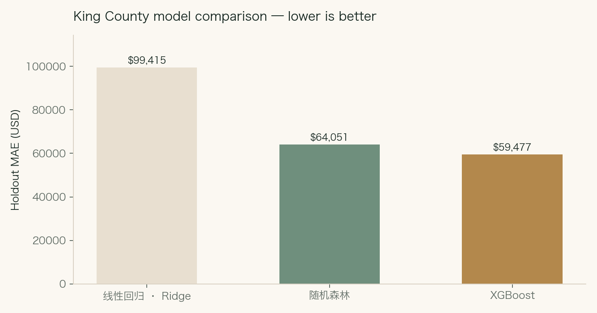
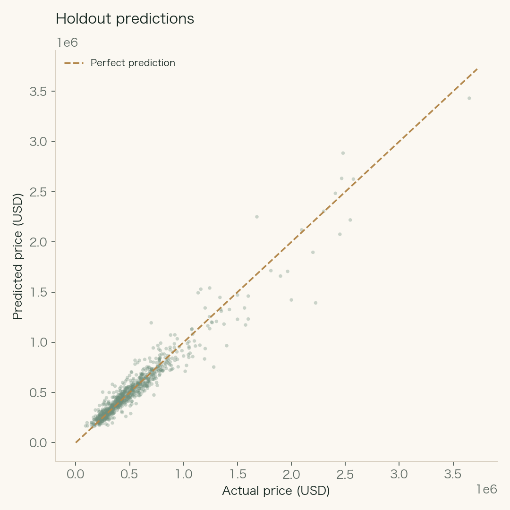
训练集分 5 折，每折用其余 4 折训练同配置 XGBoost，收集 OOF 残差； 取 10% 与 90% 分位，得到区间偏移。最终输出：
[ŷ − 90,228, ŷ + 86,242] 测试覆盖率 81.5% · 中位宽度 $176,470
区间允许不对称，因为残差本身不对称；用“±固定百分比”会在高价房处过度自信。 区间仍只覆盖历史误差模式，遇到装修、景观、产权变化会失效。
直接调用 XGBoost 原生 booster.predict(pred_contribs=True)， 得到精确 Shapley 值，不经过 shap 包的模型转换。 对每套房源，基准值 + 所有特征贡献 ≈ 预测值，API 测试固定断言这一加性关系。
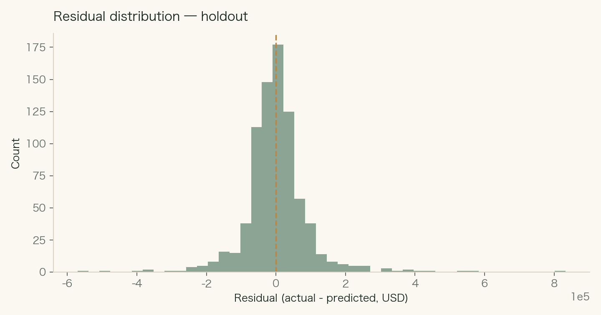
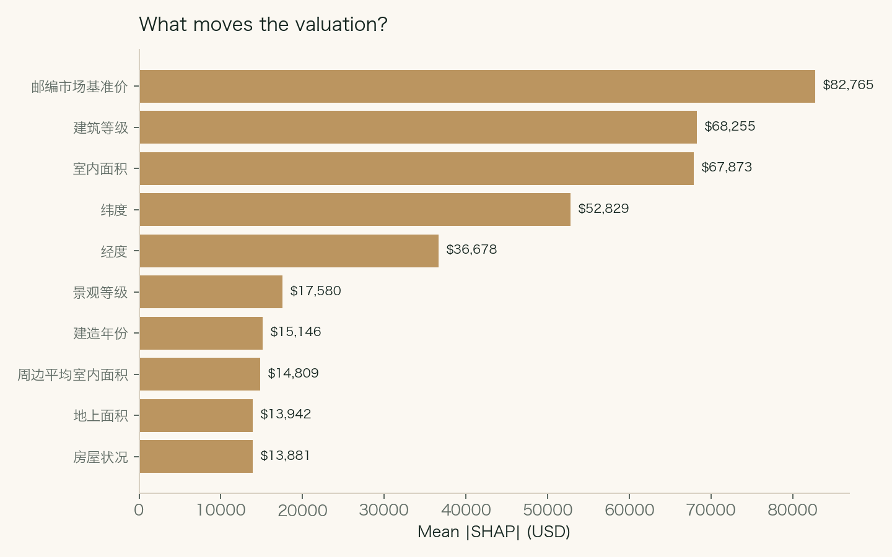
总体 MAE 是 $59,477，但不同价格带与区域的误差并不相同。产品和研究页都展示这些切片， 避免用户把“平均表现”当成“这套房的保证”。
| 价格带 | 样本 | MAE | MAPE |
|---|---|---|---|
| <300k | 179 | $37,819 | 16.67% |
| 300–500k | 292 | $41,427 | 10.51% |
| 500–750k | 202 | $61,329 | 10.08% |
| 750k–1M | 70 | $74,390 | 8.87% |
| 1–2M | 46 | $194,284 | 14.71% |
| 2M+ | 11 | $253,238 | 10.46% |
切片为测试集前 800 套固定预览；总体指标仍基于全部 4,284 套。 低价房 MAPE 更高（分母小），高价房绝对误差更大；两者都不代表“模型更差”。
| 区域 | 样本 | MAE | MAPE |
|---|---|---|---|
| 东区 | 165 | $72,220 | 10.54% |
| 北金县 | 182 | $93,491 | 13.29% |
| 南金县 | 137 | $35,295 | 11.17% |
| 西雅图中南部 | 133 | $48,633 | 15.95% |
| 西雅图北区 | 135 | $74,228 | 12.50% |
| 西雅图西岸 | 48 | $77,343 | 11.39% |
北金县与西岸的绝对误差更高；分组样本较小，解读应看区间而非单点。
月供 = P · r(1+r)^n / ((1+r)^n − 1) NOI = 有效租金 − 房产税 − 保险 − HOA − 维护 DSCR = NOI / 年债务偿还额 Cap Rate = NOI / 购买价 CoC = 年税前现金流 / 自有资金 IRR = 使 NPV = 0 的折现率
所有输入、假设、输出一起返回；页面展示月度瀑布、5 年 schedule、 退出净回款、5×5 租金×利率敏感性，以及基准/乐观/悲观情景。
默认案例是西雅图北区一套 $570,000 联排，月租 $2,950，首付 25%，利率 6.5%。 月供约 $2,702，月现金流 −$1,000，DSCR 0.63， 盈亏平衡入住率 128.9%。
这不是 bug，而是产品态度：如果默认案例需要补贴，就显示需要补贴； 用户可以提高租金、首付或更换市场，而不是被一个“正现金流”的假默认值误导。
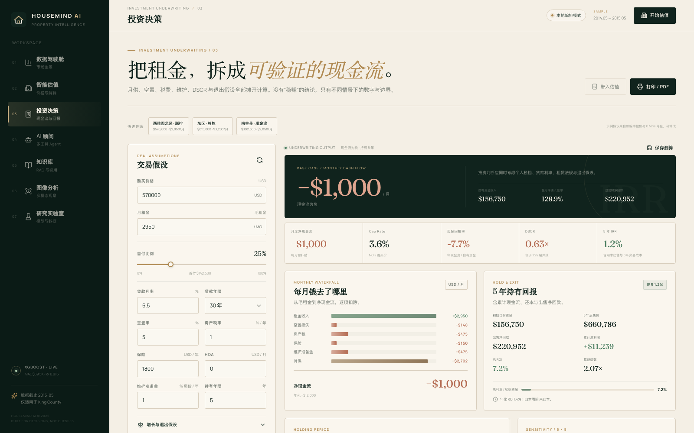
18 篇方法文档切成 71 个片段。查询同时走 512 维字符 n-gram 哈希向量与 BM25； 两路 min-max 归一后，加领域词权重、章节权重与标题覆盖：
0.46 · vector + 0.27 · bm25 + 0.17 · expanded + 0.14 · title coverage + domain / section bonus
每篇文档最多保留 2 个片段，避免一个长文档垄断结果。 DSCR、Cap Rate、NOI、IRR、SHAP、AVM、PMI、1031、MAE、R² 等领域词会被加权。
查询必须包含至少一个特定双字/拉丁术语，并与语料有实际重叠，否则返回空结果。 这避免了“更换汽车轮胎”因为“更换”二字命中房屋维护段落而硬答。
有密钥时用 DeepSeek 基于 Top 片段生成；无密钥时用本地抽取式回答。 两种模式都带编号引用、标题、章节、来源与 URL；无结果时明确说“没有找到”。
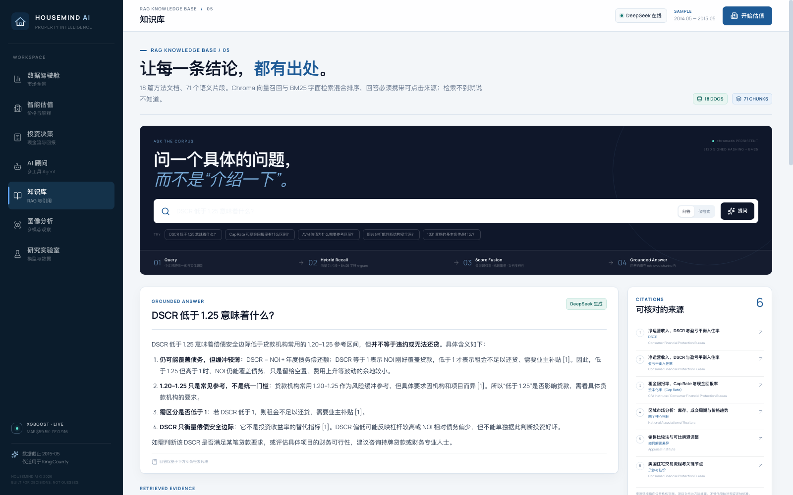
| Hit@1 | 20 / 20 |
| Hit@3 | 20 / 20 |
| 超纲拒答 | 4 / 4 |
内部人工检查，不是开放域 benchmark；问题与判定见 ml/evaluate_rag.py。
Agent 的输出不是“模型即兴写一段”，而是工具结果的综合。每次调用都有参数、摘要与耗时； 即使刷新页面，轨迹仍然保留。
meta 会话 ID / 模式 / 安全判定 status 规划、执行、综合 tool_call 工具名、参数、理由 tool_result 摘要、耗时、数据 token 逐字输出 citations 标题、章节、来源、URL done 消息 ID、建议追问
DeepSeek：OpenAI 兼容 Function Calling，最多 6 轮工具循环。
本地规划器：规则解析预算/邮编/面积/租金/首付/利率，固定工具链， 模板报告。界面明确显示 LOCAL PLANNER，不冒充 LLM。
输入注入检测、canary、输出清洗、PII 脱敏、30 次/分钟限流、工具参数强制转换。 高危输入直接阻止；单工具失败不终止整条链。
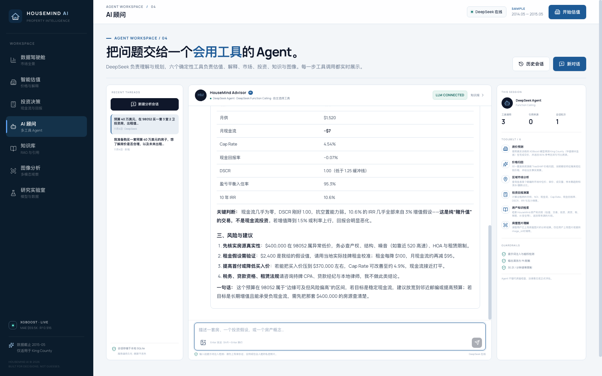
Pillow 读取亮度、过暗/过亮像素比例、色温、饱和度、边缘密度与主色板。 它只描述“画面本身”，不推断房间类型、风格、材质、面积、结构安全、霉菌、电路或产权。
当前演示接入 Qwen3-VL（qwen3-vl-plus）：识别客厅、现代简约混搭北欧风、 实木/皮革/织物/玻璃等可见材质，并给出置信度与 3–5 条观察； 仍不输出结构安全、价格或法律结论，并附“不能替代持牌房屋检查”。
面积与产权、渗漏与霉变、电路与管道、噪音与采光、HOA 规则、保险与洪水风险—— 这些必须由人或持牌检查完成，照片只能提供线索。
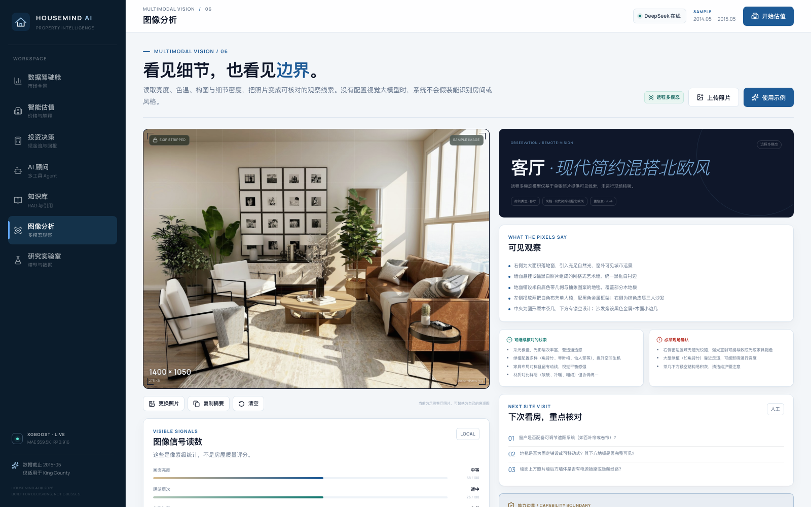
GroupShuffleSplit 按邮编分组，80/20 切分，14 个邮编在训练中完全未出现。 模型只能回退到全局邮编基准，因此误差显著上升：
| 随机切分 MAE | $59,477 |
| 未见邮编 MAE | $95,130 |
| 未见邮编 R² | 0.7814 |
| 未见邮编数 | 14 |
这不是“模型变差了”，而是冷启动场景的真实下界。产品在输入新邮编时提示补充可比与人工复核。
| 数据集 | MAE | R² |
|---|---|---|
| King County | $59,477 | 0.9156 |
| UCI 新店区 | 3.70 | 0.8305 |
| California | $29,383 | 0.8472 |
单位、年代、目标不同，禁止横向比较绝对误差。
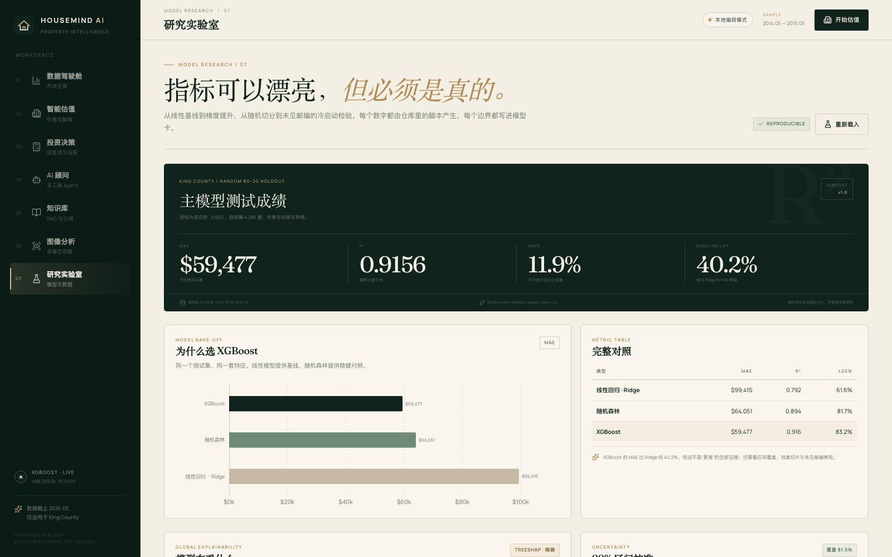
Vue 3.5 + TypeScript strict + Vite 7 + Pinia 3 + ECharts 5。 自研设计系统，不引入 Element Plus；Manrope 无衬线 + PingFang SC 回退本地打包，深海军蓝/浅灰/机构蓝。 七个页面共享 PageHeader、卡片、表格、图表与免责声明。
桌面 1600×1000 与移动 390×844 均做 DOM 检查：无横向溢出、无破图、无 console error。 移动端侧栏抽屉、表格横向滚动、图表高度压缩、知识库管线两列。
语义化标签、可见 focus、按钮 aria-label、图表文字替代、颜色不是唯一信息通道； 负现金流用暖红而非警报红，避免污名化。
| 风险 | 措施 |
|---|---|
| 提示词注入 | 模式检测 + 降级/阻止 |
| 系统提示泄漏 | canary + 输出清洗 |
| XSS | DOMPurify + 后端清洗 |
| PII | 手机/邮箱/SSN 脱敏 |
| 滥用 | 30 次/分钟滑动窗口 |
| 恶意上传 | MIME + Pillow + 大小 + EXIF |
| 密钥 | 仅环境变量，.env 忽略 |
25 个 pytest：估值、SHAP 加性、投资数学、RAG、上传与大小限制、SSE、历史轨迹、注入、PII、MCP、模型确定性。 外部依赖（DeepSeek / Vision）不配置时，测试仍覆盖本地模式。
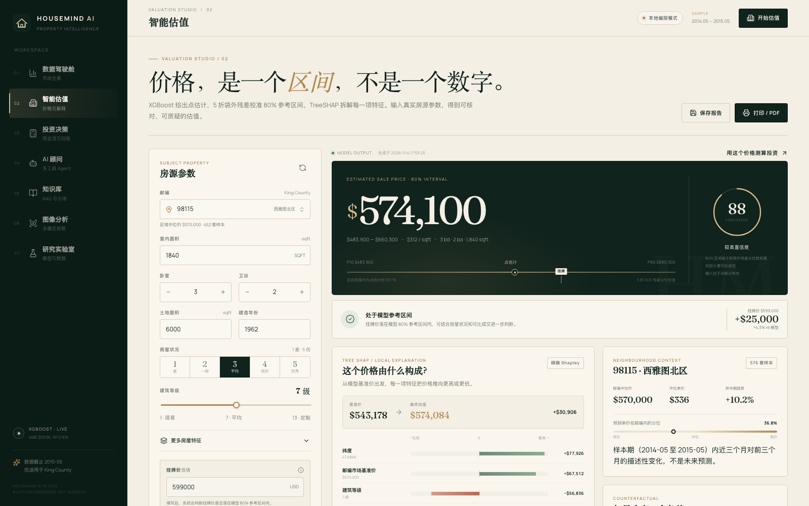
时间：2014–2015 历史成交，不反映 2020 年后市场，不是当前挂牌价。
地理：仅 King County；不对美国境外、中国购房政策或商业地产定价。
冷启动：未见邮编回退全局基准，MAE 升至 $95,130。
视觉：不能判断结构安全、渗漏、霉变、电路、产权或真实装修质量。
RAG：本地字符哈希不是语义大模型；20 题 gold set 不代表开放域效果。
投资：未计个人所得税、资本利得税、1031 置换与地方租赁法规。
Agent：无密钥时是确定性规划器，不具备开放域语言理解；界面明确标注。
金融 AI 的风险往往不是“算错”，而是“让用户以为不会错”。把数据截止、未见邮编误差、 图像边界、本地模式写进界面，是把解释权还给用户。
1. 接入 MLS 最新成交与挂牌，做时间衰减与市场调整；
2. 用 BGE/OpenAI embedding 替换字符哈希，保留拒答与引用；
3. PDF 报告导出与团队协作；
4. 公平性分组审计与漂移监控；
5. 税后、1031 与多物业组合；
6. 移动端拍照即估值（仍需明确视觉边界）。
python3.13 -m venv .venv .venv/bin/pip install -r backend/requirements.txt cd frontend && pnpm install && pnpm build cd .. cp .env.example .env .venv/bin/python -m uvicorn backend.main:app --port 8000
打开 http://127.0.0.1:8000；API 文档 /docs。 无密钥时完整运行本地规划器、本地视觉与本地抽取式 RAG。
./scripts/train.sh .venv/bin/python -m pytest tests -q
产物：模型 joblib、metrics JSON、全局 SHAP、模型卡、误差切片、 泛化实验、RAG gold set、四张诊断图。
| 公开仓库 | 代码 · README · 环境模板 · 测试 |
| 技术文档 | 本文档（≤30 页） |
| 演示视频 | 5–8 分钟 · 1080p |
| 在线部署 | Docker / 单端口可选 |
| 数据说明 | 三数据集隔离 · 原始许可 |
Python 3.13 · FastAPI · XGBoost · scikit-learn · ChromaDB · SQLAlchemy · Vue 3 · TypeScript · Vite · Pinia · ECharts · Pillow · MCP SDK
价格是区间，解释是责任，边界是产品的一部分。
这不是“功能列表”，而是一张可核对的对照表：比赛看什么，项目用什么证据回答。
| 用户 | 要解决的问题 | 对应能力 |
|---|---|---|
| 首购者 | 挂牌价是否明显偏离历史可比 | 估值、区间、可比成交、SHAP |
| 小投资者 | 租金能否覆盖月供，最坏情景如何 | NOI、DSCR、现金流、IRR、压力情景 |
| 分析师 / 经纪 | 结论能否复核，依据在哪里 | 引用、工具轨迹、模型卡、数据边界 |
功能：市场驾驶舱、房价预测、价值解释、投资测算、Agent、RAG、图像分析。
非功能：可解释、可追溯、可降级、安全、响应式、可复现；没有密钥也必须能完整演示。
边界：历史成交样本，不是当前挂牌价；不是正式评估、贷款审批、税务或法律意见。
| 维度 | 证据 |
|---|---|
| AI 深度 35% | 6 工具 Agent、DeepSeek Function Calling、18 篇/71 片段 RAG、MCP、精确 TreeSHAP |
| 创新性 25% | 估值—区间—解释—现金流—知识—Agent 串成可核对决策链；双模式 Agent；边界产品化 |
| 前端工程 10% | Vue 3 + TS strict、Pinia、ECharts、路由懒加载、代码分割、三档响应式检查 |
| 实用性 10% | 21,418 套真实成交；默认负现金流不美化；估值/投资/知识均可复核 |
| 用户体验 10% | SSE 流式输出、工具轨迹、加载/错误状态、统一设计系统 |
| 社会价值 10% | 降低首次购房信息不对称；公平性说明；不替代专业评估与检查 |
| 原方案 | 实现位置 |
|---|---|
| 01 驾驶舱 | / |
| 02 预测 + 03 解释 | /valuation（点估计、区间、局部 SHAP） |
| 04 投资 | /investment |
| 05 Agent | /agent |
| 06 RAG | /knowledge |
| 07 视觉 | /vision |
| 附加验证页 | /research（不替代 03） |
每个选型都同时说明“为什么选、怎么集成、代价是什么”；不用“先进”代替“可验证”。
| 层 | 选型 | 选型理由 | 代价 / 边界 |
|---|---|---|---|
| 估值 | XGBoost | 表格数据强、CPU 可训练、推理稳定；相对 Ridge 的 MAE 降低 40.2% | 只适用于 King County 历史分布，不做全国泛化 |
| 解释 | 精确 TreeSHAP | 用 pred_contribs=True 避免近似解释误差；贡献之和可校验 | 依赖树模型；解释不等于因果 |
| 区间 | OOF 残差分位数 | 不假设正态；测试集实测覆盖 81.5%，中位宽度 $176,470 | 只校准历史误差，不覆盖装修/产权突变 |
| LLM | DeepSeek + Function Calling | OpenAI 兼容、中文稳定、工具参数可控；最多 6 轮工具循环 | 外部依赖；无 Key 时明确降级，不伪装在线 |
| Agent | 自研 Orchestrator | 同一套工具、SSE 事件和本地确定性规划器；无需额外图运行时 | 不是通用 LangGraph；复杂多 Agent 图需扩展 |
| RAG | Chroma + BM25 + 字符 n-gram | 可离线、可复现、精确词召回强；带引用与拒答门槛 | 不是神经语义 Embedding；开放域泛化有限 |
| 视觉 | Pillow + Qwen3-VL | 当前已接入 qwen3-vl-plus，可识别房间/风格/材质；无 Key 或失败时回退本地信号 | 单图不能判断结构安全、面积、产权 |
| 工具协议 | MCP stdio + REST | Web 与 MCP 共用 execute_tool，同一模型、同一假设 | MCP 客户端需本地配置；非浏览器直连 |
Vue SPA 只经 FastAPI 访问能力层；Agent 与 MCP 不直接加载模型，而是调用共享工具层。 请求链路固定为：Pydantic 校验 → 特征工程 → 模型/公式/检索 → 结果封装 → SSE 或 JSON。
防泄漏：固定 80/20 holdout，邮编统计只在训练集拟合；GroupShuffleSplit 单独报告未见邮编。
稳定性：Prompt 约束、canary、输出清洗、PII 脱敏、注入拦截、30 次/分钟限流。
成本：DeepSeek 只在有 Key 时调用；本地规划器与本地 RAG 兜底；工具循环上限 6 轮。
XGBoost MAE $59,477 · R² 0.9156
区间覆盖 81.5% · 未见邮编 MAE $95,130
RAG：18 篇 / 71 片段 · Hit@1 100% · 拒答 4/4
测试：25 个 pytest（本地模式也覆盖）
项目的创新点不在“用了大模型”，而在把多个 AI 能力组织成一条可核对、可降级、可解释的房产决策链。
01 决策链而不是单点模型。估值、区间、SHAP、现金流、RAG、Agent 共享同一套服务层与假设。
02 不确定性优先。OOF 残差分位数给出不对称 80% 区间，界面主视觉是区间而不是单点。
03 精确可加性。TreeSHAP 贡献之和与预测值可校验，避免“看起来像解释”的近似图。
04 双模式 Agent。有 Key 走 Function Calling，无 Key 走确定性规划器；工具、事件流、轨迹保持一致。
05 工具层复用。Web API 与 MCP Server 共享 execute_tool，不出现两套估值逻辑。
06 边界产品化。视觉只描述可见信号；知识库检索不到就拒答；不把辅助参考包装成正式评估。
01 从“给一个价格”到“给一条决策路径”。用户能看到价格、区间、原因、月供、DSCR、引用和下一步核查。
02 负现金流不美化。默认示例可以是负现金流；系统不为了演示好看而改参数。
03 让“不知道”成为答案。超纲知识问题明确拒答，而不是拿最相似段落硬答。
04 让图片“看见但不越界”。不根据一张照片断言结构安全、面积或产权。
05 面向首次购房者的信息公平。把评估师/投资机构才熟悉的区间、归因、现金流拆开给普通用户看。
06 可复现的竞赛工程。模型、指标、截图、PDF、视频都有生成脚本，数字不靠手写。
| 交付物 | 状态 | 说明 |
|---|---|---|
| 可运行 Web 应用 | 完成 | 7 个路由，单端口 8000；开发模式 5173 |
| 数据与模型 | 完成 | 三数据集隔离；模型、指标、SHAP、模型卡入库 |
| Agent / MCP | 完成 | 6 工具；DeepSeek 与本地规划器；stdio MCP |
| RAG | 完成 | 18 篇 / 71 片段；引用与拒答 |
| 技术文档 | 完成 | 本文档；A1–A4 为评审补充 |
| 演示视频 | 完成 | 5:47 · 1080p · 普通话 |
| 公开仓库 | 提交前完成 | 推送 GitHub/Gitee，确认无密钥 |
| 在线演示 | 可选 | Docker / 单端口部署 |
以下结果来自 2026-11-12 运行中的 FastAPI 服务，不是 README 的功能列表。完整记录见 docs/EVIDENCE.md。
会话 b9c348c7… · 模式 deepseek · 工具轨迹 5/5； SSE 事件顺序 meta → status → tool_call → tool_result → token → citations → done。
| # | 工具 | 实际返回摘要 |
|---|---|---|
| 1 | predict | $500,200；区间 $410,000–$586,500；挂牌低于区间 |
| 2 | explain | 纬度 +$60,980、邮编 +$55,973；面积 −$59,739 |
| 3 | market | 98052 中位价 $615,000；$274/sqft；571 笔 |
| 4 | investment | 月供 $1,896；月现金流 −$193；Cap 5.11%；IRR 8.9% |
| 5 | knowledge | 命中 5 段；最高来源 DSCR 文档 |
工具由模型在 Function Calling 循环中选择；代码路径：agent/orchestrator.py、agent/tools.py、mcp_server.py。
问题“首付比例和DSCR有什么关系？”，top_k=6，回答模式 deepseek，引用 6 条。
| # | 分数 | 文档 / 章节 |
|---|---|---|
| 1 | 1.901 | DSCR 与盈亏平衡 · DSCR |
| 2 | 1.454 | DSCR 与盈亏平衡 · 盈亏平衡 |
| 3 | 1.102 | 月供、首付与摊还 · 月供公式 |
| 4 | 1.046 | 月供、首付与摊还 · 首付与 PMI |
| 5 | 0.882 | 中国购房政策概览 · 因城施策 |
| 6 | 0.785 | 市场周期 · 杠杆的双刃剑 |
Chroma 向量召回 + BM25 + 领域加权；结果带 score、section、source_url；检索不到时拒答。
Qwen3-VL：客厅；现代简约混搭北欧风；置信度 0.92；实木/皮革/织物/玻璃等可见材质。失败自动回退本地信号。
/api/valuation/analyze 200，估值 $570,000，区间 $479,800–$656,200；/api/vision/analyze 200，remote-vision。
25 passed；覆盖估值、SHAP 加性、投资数学、RAG、上传限制、SSE、历史轨迹、注入、PII、MCP、模型确定性。